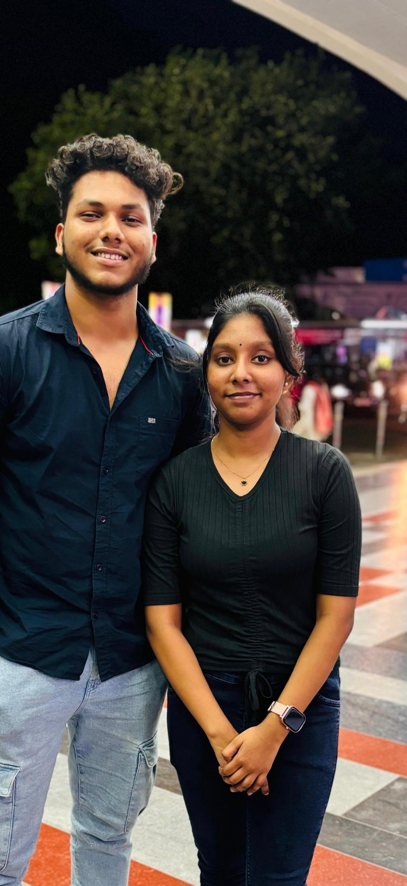

The first meet
The day the screen became real.
This photo will always matter because it was not just a picture — it was the first meet. A simple frame, but a big memory. After all the waiting, there we were, finally standing together.
No dramatic movie scene was needed. That one moment was enough. It became the beginning of so many little memories that later turned into a story.